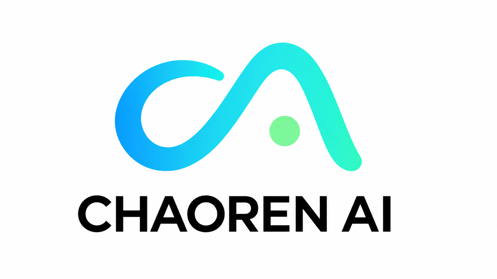

CHAOREN AI / CROSS-BORDER
历史记录
跨境测算
达人寄样看板
飞书连接

CHAOREN AI / 跨境经营工作台
历史记录
查看最近的测算结果、利润变化与订单修改记录。
北京时间
--:--:--
加载中
中美时间
实时同步
美国时间 · 洛杉矶
--:--:--
加载中
商品名称 / 规格编码 / 商品编码
商品属性
全部属性
常规
盲盒
毛绒
操作人
数据模式
操作
＋ 新增商品
历史记录
图片
商品名称
规格编码
商品编码
商品属性
净利润
利润率
最近保存
操作人
操作
这是 GitHub Pages 静态演示版，不需要登录；真实保存、飞书读取、数据库和 Redis 仍在正式项目中运行。